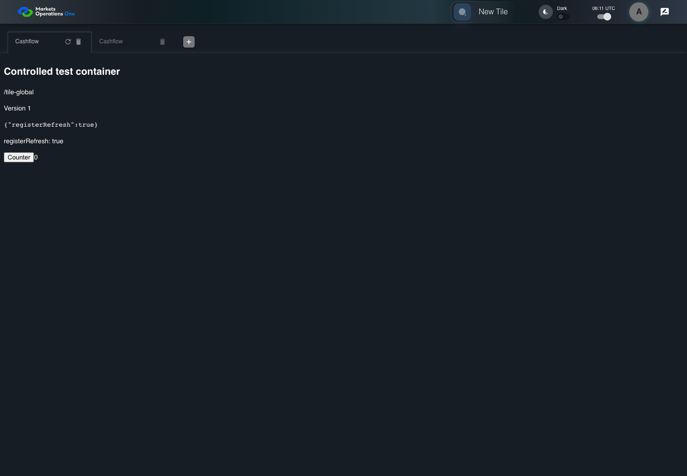

UX-007 keyboard and accessibility probe
PASS · application/run-050/ux-007-keyboard-and-accessibility-probe-7756c4d1f99b-attempt-1 · ACTUAL_APPLICATION_LOCAL_SERVICES
Actual React shell. Controlled catalog, user identity, photo failures, and SystemJS tenant. Chromium only. Accessibility and layout outcomes are proposed probes; no approved conformance standard is inferred.
2026-10-22T06:11:29.723Z to 2026-10-22T06:11:32.219Z
Assertions and result · Artifact manifest · Exact run inputs and source hashes
Result SHA-256:75a480b0e5957dbdb1724a24656d406ad549f6fcb3b857634cca0ca909e77275Machine observations
- accessibility-snapshot.json
5a4255e1ddbf04c8b2c6a9903e7e133e1b1f44f15cc9109d6afa3835e94af71d
Screenshot capture: CAPTURED. Named frames: 5.
Step screenshot evidence: COMPLETE. 4/4 canonical steps have execution screenshots.
Canonical step timeline
Given USER-A has the Cashflow workspace loaded
Execution: PASSED.
1. step-01 Visible state after step 1: Given USER-A has the Cashflow workspace loaded
2026-10-22T06:11:30.725Z · 1440×1000
Step: /Users/lushevol/code/github/ratan-release-impact/workbench/tasks/ui-test-coverage-20261022/test-cases.md:12506
SHA-256:30b830f72aa6c7d82abacd3910a0677ebc11c07108c1cddf8c36b8f043aea7afWhen The accessibility probe captures the Cashflow workspace controls
Execution: PASSED.2. step-02 Visible state after step 2: When The accessibility probe captures the Cashflow workspace controls
2026-10-22T06:11:30.808Z · 1440×1000
Step: /Users/lushevol/code/github/ratan-release-impact/workbench/tasks/ui-test-coverage-20261022/test-cases.md:12507
SHA-256:72da2db7b60e0880ee3c8519ef340626f5d7c8ba1de97b090d81f2d1f8b7020fThen The icon button labelled "refresh" in the tab labelled "Cashflow" on the Home page has accessible name equal to "refresh"
Execution: PASSED.3. step-03 Visible state after step 3: Then The icon button labelled "refresh" in the tab labelled "Cashflow" on the Home page has accessible name equal to "refresh"
2026-10-22T06:11:31.660Z · 1440×1000
Step: /Users/lushevol/code/github/ratan-release-impact/workbench/tasks/ui-test-coverage-20261022/test-cases.md:12508
SHA-256:97bc7c2305de625667c179f779b18e75846d4a9628f495f3af6711a65969a740And The icon button labelled "delete" in the tab labelled "Cashflow" on the Home page has accessible name equal to "delete"
Execution: PASSED.4. step-04 Visible state after step 4: And The icon button labelled "delete" in the tab labelled "Cashflow" on the Home page has accessible name equal to "delete"
2026-10-22T06:11:31.727Z · 1440×1000
Step: /Users/lushevol/code/github/ratan-release-impact/workbench/tasks/ui-test-coverage-20261022/test-cases.md:12509
SHA-256:4c88ccfab8635aacded080294acedc9c8e597a6a0bf04556264c278e9183c777
Additional named frames

The final visible state after the named test assertions.
2026-10-22T06:11:31.869Z · 1440×1000Step: Test source: /Users/lushevol/code/github/ratan-release-impact/workbench/e2e/audit-specs/ux-shell.spec.ts:39
SHA-256:
4065936f4fb75f753a24b671ca85d551e6bf043229746ef114839fc030b87dc6Screenshots establish visible state only. Assertions and traces support functional claims.